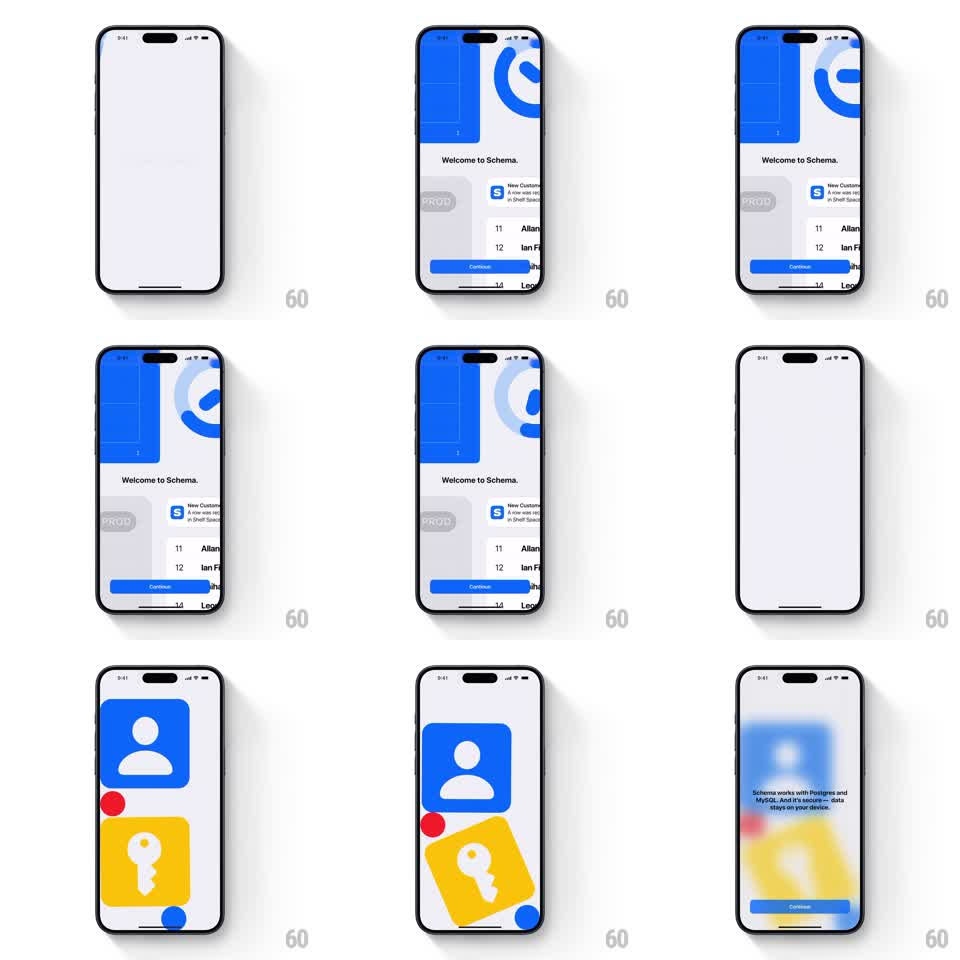

Media
Frame-by-frame

Rebuild this animation 1:1: Schema's onboarding drop - stylized icons (a blue person badge, a red dot, a yellow key card) fall onto the welcome screen with spring physics, bounce and rotate, then blur away into the security info screen.

Rebuild this animation 1:1: Schema's onboarding drop - stylized icons (a blue person badge, a red dot, a yellow key card) fall onto the welcome screen with spring physics, bounce and rotate, then blur away into the security info screen.
## Integration
Integration: stack-agnostic spec - springs given as stiffness/damping, timed motions as duration + curve; map every value to your framework and animation library of choice.
## Scene
Pale lavender screen. First the welcome state: "Welcome to Schema." centered, app UI cards peeking from the top edge (a blue panel, a circular chart), a notification row, a blue "Continue" button and a "Log in" link at the bottom. Then the icon playground: a big blue rounded square with a white person glyph, a small red circle, and a yellow rounded square with a white key glyph, scattered and tilted. Finally a blurred transition into a security screen ("Schema works with Postgres and MySQL. And it's secure - data stays on your device.") over the smeared icons.
## Motion spec
Pattern: spring-physics icon drop with a blur handoff.
- On continue, each icon drops from above the screen with real fall: gravity acceleration, then a bounce (2 bounces, ~60% restitution) and rotation wobble (+-10deg settling to its resting tilt, spring ~180/12).
- The icons land in cascade (person badge, red dot 150ms later, key card 200ms after that), each impact adding a tiny screen shake (2pt, 150ms) and a soft shadow that fades in under the icon.
- Resting state: icons idle with a barely-there sway (+-1deg, 3s, phase-offset).
- Transition out: the whole field blurs (0 -> 24pt gaussian, 400ms) and dims slightly as the security copy and its Continue button fade up through the blur (300ms).
## Calibration
- Bounces must feel weighted: fall fast, bounce low, settle quickly (under 1.2s per icon).
- The blur is the transition itself - no cut; the icons remain visible, smeared, behind the security text.
## Reduced motion
Icons fade in place (300ms); blur transition kept but shortened (200ms).
## Don't miss
- The icons are flat brand shapes (blue/person, red/dot, yellow/key) - no gradients.
- The welcome content never returns after the drop; the flow is one-directional.